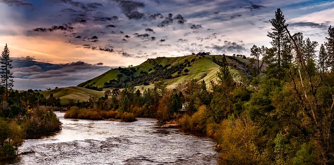

 The falls receive approximately 10% of the flow from Niagara River, with most of the rest going over Horseshoe Falls, from which it is separated by Goat Island. It has a straight line crest width of about 830 feet (250 m). If measured along the jagged lip of the falls, the crest is about 950 feet (290 m) long (but see coastline paradox). The torrent of water passing over the crest of the falls is about 2 feet (0.61 m) deep. Volume of water going over the Horseshoe Falls: 2,271,240 L/second (600,000 gallons/second)
The falls are viewabl e from a steep angle on the American side, where it is possible to approach to within several meters of the edge of the falls. One can view the falls from the bank of the river, as well as on Goat Island and Luna Island, which are accessible by a pedestrian bridge that crosses the rapids of the Niagara River upstream from the falls. The falls are viewable head-on from the Canadian side in Niagara Falls, Ontario. Wholly on the United States borders
2nd Largest falls of the three